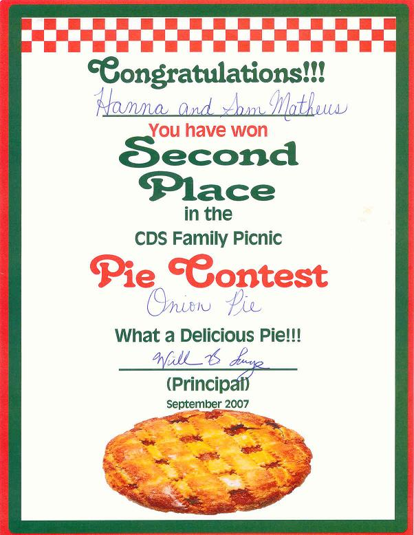

Recette
n° 154
Onion pie, la tarte à l'oignon qui a valu à Hannah et
Samuel Mathews "the 2nd place in the 2007 International Pie Contest"
d'Escazu

Ingredients (for 12 servings)
- dough (500g)
- large yellow onions
(10)
- flour (100g)
- butter (100g)
- milk (1liter)
- egg yolks (6)
- oil (2 tablespoons)
- salt and pepper
(according to taste)
Preparation
- spray the oil
on the piepan
- spread the dough on
the piepan
- pre-heat the oven
(200C, 400F)
- put the piepan in the
oven for 20 mn, then take it out and let it cool down
- peel and slice the
onions
- sauté them in
a frying pan with oil ( they must become darker but not burn)
- spread the onions on
the dough after removing the oil in excess on paper
- make a white sauce
with butter, flour, milk and yolks, salt and pepper
- spread the white
sauce on the onions
- cook in the oven for
20 mn
Observation
Cette tarte à l'oignon a valu à Hannah et
Samuel Mathews la seconde place au concours international de tartes
d'Escazu le 29 septembre 2007 .